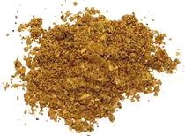

 |
Rasam Podi, ChettinadIndia - Tamil Nadu, Chettinad - Rasam Podi | ||||
| Makes: Effort: Sched: DoAhead: |
1-1/2 cups ** 1 hr Yes |
This powder is used to flavor sour peppery soups called Rasams, which are very popular in southern India. They are usually vegetarian, but in Chattinad some are made with chicken. | |||
|
------ 1/2 1 1/2 6 1 1 1 ------ 8 1/8 1/4 |
--- c T t T t t --- t t |
-- Dry Roast Coriander seeds Cumin seeds Fenugreek seeds Red Chilis (1) Peppercorns, blk Toover Dal (2) Chana Dal (3) ----------- Curry Leaves (4) Asafoetida (5) Turmeric |
Make - (1 hr - 30 min work)
|